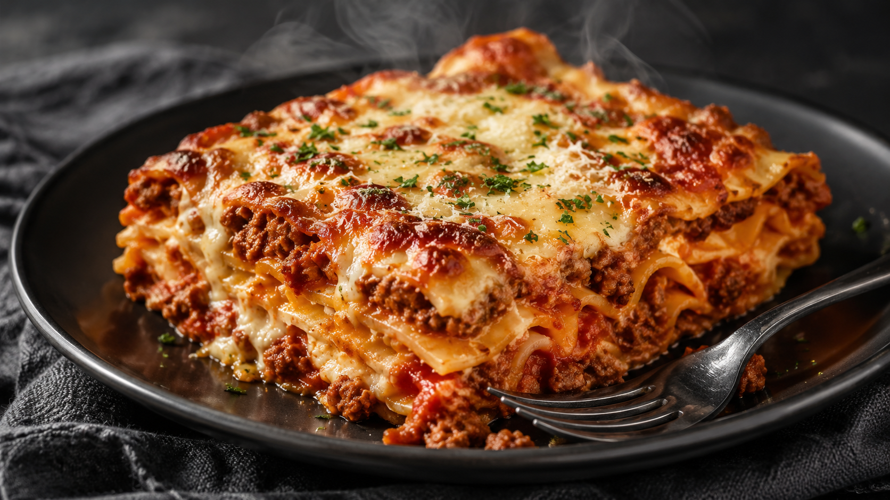

Home
Lasagna

This Italian lasagna dish is garaunteed to please friends and family. The preparation is simple and takes about 90 minutes to make from start to finish.
Ingredients
- 1 lb. of ground beef
- 2 tbsp of chopped garlic
- 4 cups of flower
- 3 eggs
- 1 cup of whole milk
- 1/2 cup of baking powder
- 1 tbsp of sea salt
- 4 large tomatoes
- 2 large onions
- 1/2 lb. of ground pork sausage
- 4 cups of shredded mozzerala cheese
- 1 cup of shredded parmeasan cheease
Directions
- Mix flour, sea salt, eggs, milk, and baking powder.
- Flatten and cut lasagna pasta strips, 2in x 8in.
- Layer pasta in baking pan.
- Cook ground beef and pork sausage until done.
- Layer lasagan pasta strips in pan while adding cheese, blended tomatoes, onions, and meats.
- Bake at 425 degrees for 40 minutes.